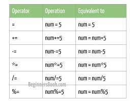

assign_opretor--- Assignment operators are used to assign values to variables. In the example below, we use the assignment operator ( = ) to assign the value 10 to a variable ...
<script>
let x;
x = 10;
let y = 3;
x = y;
console.log(x);
</script>